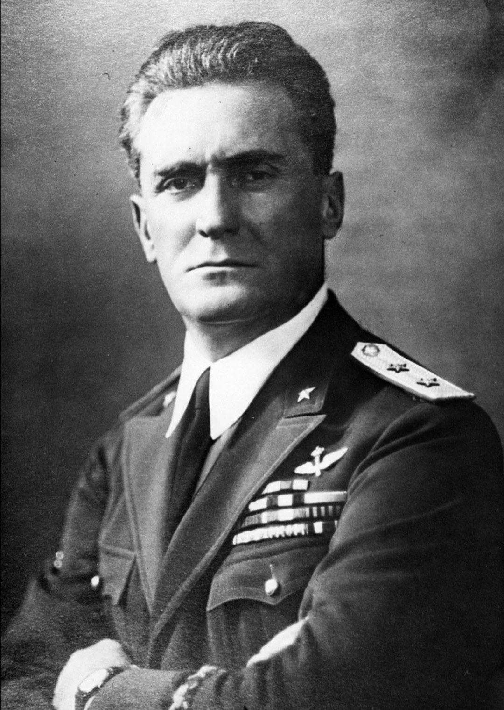

Cette fiche présente un dirigeant militaire et politique du régime fasciste italien, acteur central des campagnes coloniales et des structures de pouvoir instaurées par Benito Mussolini. Les informations ci‑dessous sont exposées dans un cadre strictement historique et documentaire, conformément aux exigences muséales de neutralité et de contextualisation.
Le régime fasciste, instauré en Italie entre 1922 et 1943, mit en œuvre des politiques autoritaires, impérialistes et répressives, notamment en Afrique. Les responsables présentés dans cette section occupèrent des fonctions majeures dans ces structures de pouvoir et dans les décisions prises par l’État italien durant cette période.
Nom : Rodolfo Graziani
Dates : 11 août 1882 – 11 janvier 1955
Nationalité : Italienne
Grade : Maréchal d’Italie
Rodolfo Graziani est l’une des figures militaires les plus controversées du régime fasciste italien. Maréchal proche de Mussolini, il se distingue par ses campagnes coloniales brutales en Afrique et par son rôle dans la Seconde Guerre mondiale, notamment en Libye et au sein de la République sociale italienne.
En 1940, Graziani commande les forces italiennes en Libye et lance l’offensive contre l’Égypte. L’opération tourne rapidement au désastre : les Britanniques contre‑attaquent et infligent une défaite majeure à l’armée italienne lors de l’opération Compass. Graziani est remplacé par Erwin Rommel.
Après la chute de Mussolini en 1943, il rejoint la République sociale italienne (RSI) et devient ministre de la Défense, supervisant la lutte contre les résistants italiens aux côtés des forces allemandes.
Graziani reste une figure sombre de l’histoire italienne : chef militaire fasciste, acteur des violences coloniales et responsable de la répression en Italie durant la guerre. Son parcours illustre les dérives du militarisme fasciste et les conséquences humaines des campagnes coloniales et de la collaboration avec l’Allemagne nazie.